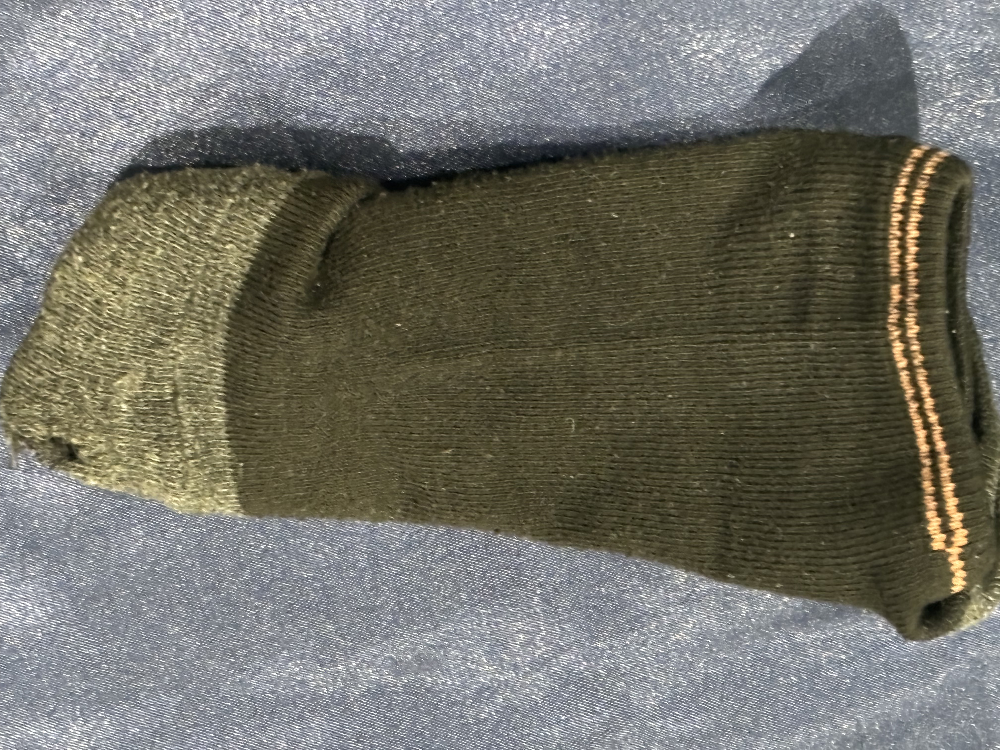
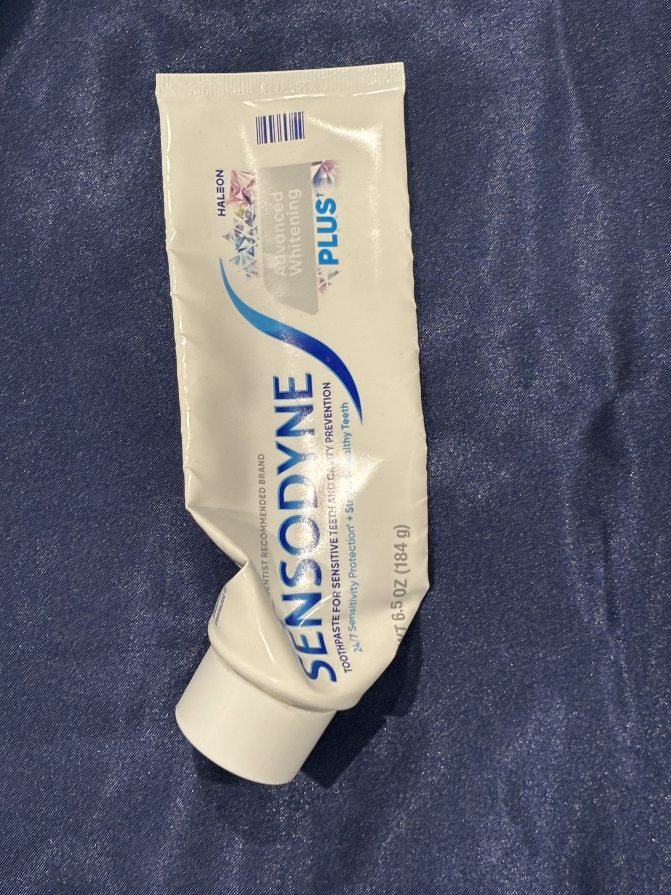
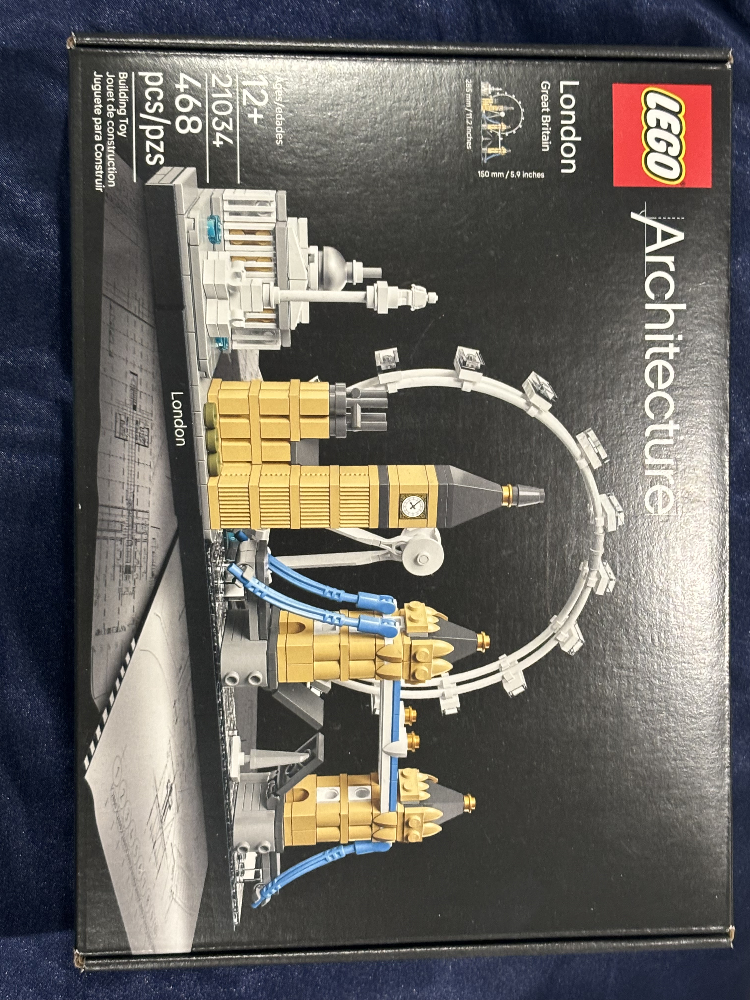
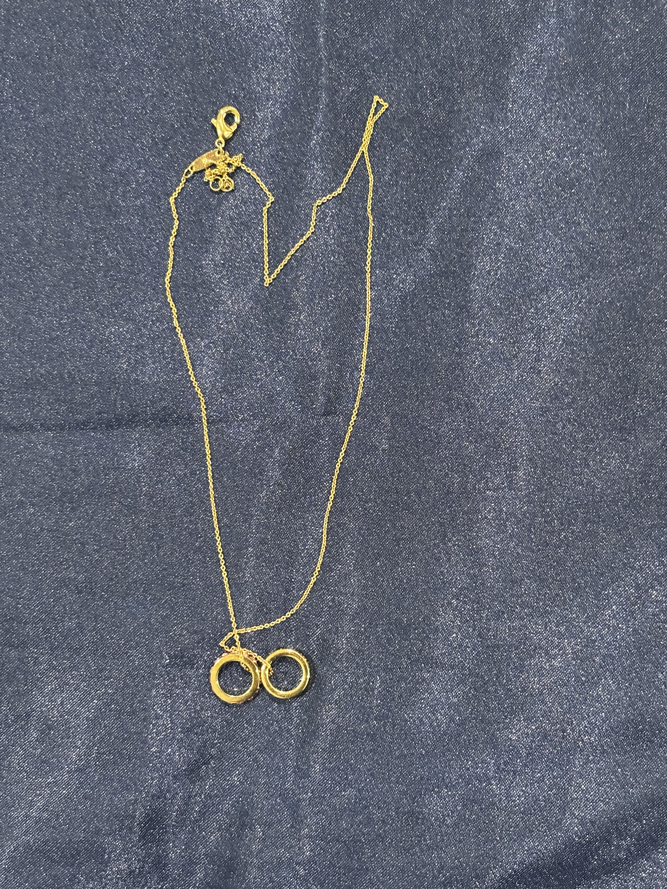
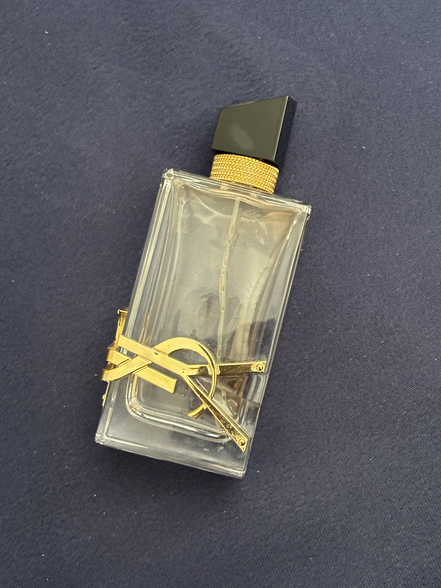
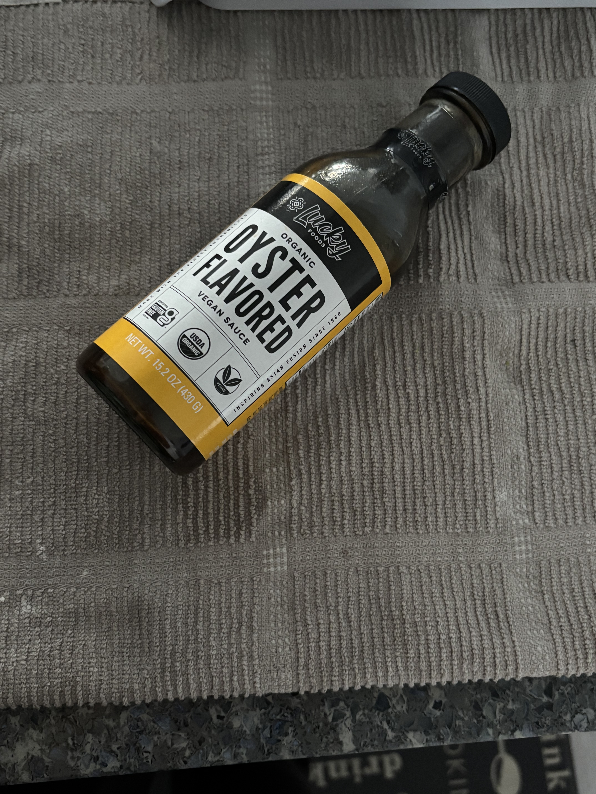
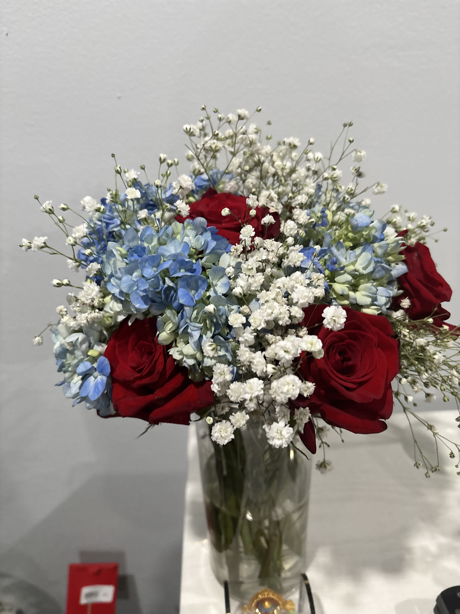
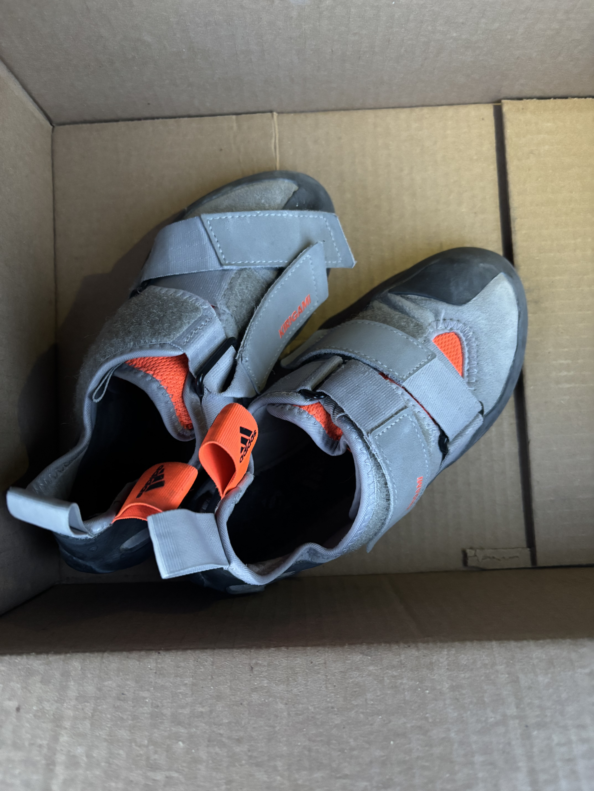

It's come to a point where the surface of my desk is foreign to me. A few years ago, that desk served its original purpose. I would sit down at my desk and do my work. I tried to keep it relatively clean, but I liked having small trinkets, books, and other personally significant items to accompany me. However, as the years went on, I had to transition to working on my bed as my desk filled up with the everyday trinkets I would drop there. The items were everyday memories I would get lost in every time I tried to clean my desk. I would think about their origins and their connection to people in my life, or even to people no longer in my life. My nostalgia was an unfortunate justification for my hoarding.
If it is the nostalgia that's stopping me, I decided that keeping a digital log of the items I need to get rid of would help me part ways with them. I rarely actually use the things on my desk; most of the time, I pick something up to throw away, remember some important memory associated with it, and put it back down exactly where it was. Sounds sentimental, but it really is a problem when I start keeping empty wrappers and boxes just because something that used to be inside them was useful.
Despite naming it “Trash of the Week”, I don’t really consider any of these things “trash”. They might objectively be old or unusable, but they’re a representation of me, and an extension of me. These records of trash are journal entries. I like to include external research on these items being discarded to raise awareness of their global social and environmental impact. These are more than just future pieces of a landfill or material recovery facility; they are items connected to stories I’d like to tell, and awareness I’d like to bring.
This Week’s Overview
This week, I chose things that have overstayed their welcome, either because I got lazy or because I had a hard time letting them go. Last week, I disposed of things that I would likely never use or wear again, even in their new condition, like the ugly yellow sweater or the small telescope. While those things were perfectly functional, I no longer used them. It is very unlikely that I would replace any of those things, since the whole reason I got rid of them was that I had no use for them.
This week, unlike last week, I looked around my house for items that I’ve prolonged the use of and probably should have replaced a while ago. I will probably buy a new version of these items, but it makes me question whether the memories I have associated with them will stay. It’s reminiscent of the Ship of Theseus, while the new version of the item will be essentially identical to the old one, composed of all the same parts; will it still be the same item in terms of meaning?
I think yes, or at least sort of. Even though the new things would not inherently have the same memories associated with them, I think, simply by virtue of being a “replacement” for the old things, they are linked. Every time I look at the new item, I’ll remember how I used it to replace the old item and then remember the memories associated with the old item. Sort of like a chain reaction.
Things that are no longer usable
These are things that have been used, and now, either due to the passing of time or the intensity with which I used them or both, they are no longer fit to be used. The first item is an old paintbrush, one I used relatively recently, and it still has dry paint stuck on the bristles. I didn’t bother washing it because I knew it needed to be replaced. The second item is a sock with a hole. Two issues with this one: the obvious one is the hole, and the other is that it's also missing its pair. Yet, I probably continued wearing it with mismatched socks until the hole became unbearable. The last item in this group is a bottle of expired sauce. This is a bottle of oyster sauce that is still over half full, but it is now a health hazard that has been sitting in my fridge for two months longer than it should have.
It’s what’s on the inside that counts
These are all things where the items of value have long been removed from within it, and yet, for some reason, I still kept the vessel that carried it. The first item is a box of Lego. The Legos that were inside it are now built and sitting on a shelf in my house. The box I still kept for some reason, because it felt wrong to throw away, since it was a gift (this will be a recurring theme in many items). Similarly, I have an empty perfume bottle. I already got the new bottle, but honestly, I thought the bottle was too pretty to throw away. Lastly, I have a used toothpaste container. Every day, I thought I squeezed out the very last bit, the very next day, I would try again, and just a little bit more would come out. It’s finally time for it to run out completely and be replaced with the backstock
These were difficult to part with
This group of items was probably the hardest for me to get rid of, because they hold very deep sentimental value. The memories associated with them are pretty recent. I don’t think I can even call it nostalgia. It is probably because the recollection of acquiring them is so fresh in my head that these were some of the hardest things to let go of. First up is a rusted necklace with bittersweet reminders of a broken friendship. Up next is my first pair of rock climbing shoes, which led to the rediscovery of a dormant passion. Lastly, I have to get rid of the flowers my boyfriend gave me, since they are now dry and wilted.
Item Gallery








